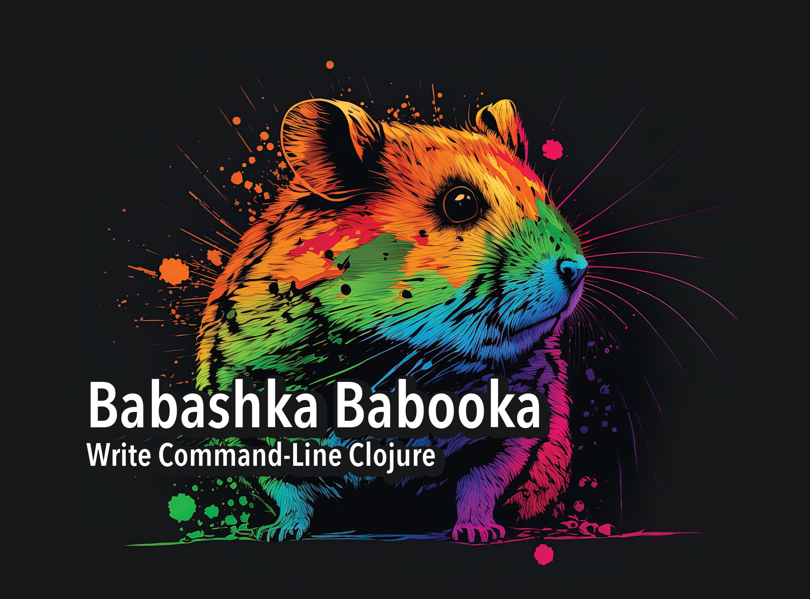

bb my-clojure-program.cljBabashka Babooka: Write Command-Line Clojure
Introduction
There are two types of programmers in the world: the practical, sensible,
shell-resigned people who need to google the correct argument order for ln -s;
and those twisted, Stockholmed souls who will gleefully run their company’s
entire infrastructure on 57 commands stitched together into a single-line
bash script.
This guide is for the former. For the latter: sorry, but I can’t help you.
Babashka is a Clojure scripting runtime that is a powerful, delightful alternative to the shell scripts you’re used to. This comprehensive tutorial will teach you:
-
What babashka is, what it does, how it works, and how it can fit into your workflow
-
How to write babashka scripts
-
How to organize your babashka projects
-
What pods are, and how they provide a native Clojure interface for external programs
-
How to use tasks to create interfaces similar to
makeornpm
If you’d like to stop doing something that hurts (writing incomprehensible shell scripts) and start doing something that feels great (writing Babashka scripts), then read on!
|
Note
|
If you’re unfamiliar with Clojure, Babashka is actually a great tool for learning! This crash course and this chapter on namespaces cover what you need to understand the Clojure used here. There are many good editor extensions for working with Clojure code, including Calva for VS Code and CIDER for emacs. If you’re new to the command line, check out Learn Enough Command Line to be Dangerous. |
Sponsor
If you enjoy this tutorial, consider sponsoring me, Daniel Higginbotham, through GitHub sponsors. As of April 2022 I am spending two days a week working on free Clojure educational materials and open source libraries to make Clojure more beginner-friendly, and appreciate any support!
Please also consider sponsoring Michiel Borkent, aka borkdude, who created babashka. Michiel is doing truly incredible work to transform the Clojure landscape, extending its usefulness and reach in ways that benefit us all. He has a proven track record of delivering useful tools and engaging with the commuity.
What is Babashka?
From a user perspective, babashka is a scripting runtime for the Clojure programming language. It lets you execute Clojure programs in contexts where you’d typically use bash, ruby, python, and the like. Use cases include build scripts, command line utilities, small web applications, git hooks, AWS Lambda functions, and everywhere you want to use Clojure where fast startup and/or low resource usage matters.
You can run something like the following in a terminal to immediately execute your Clojure program:
If you’re familiar with Clojure, you’ll find this significant because it eliminates the startup time you’d otherwise have to contend with for a JVM-compiled Clojure program, not to mention you don’t have to compile the file. It also uses much less memory than running a jar. Babashka makes it feasible to use Clojure even more than you already do.
If you’re unfamiliar with Clojure, using Babashka is a great way to try out the language. Clojure is a hosted language, meaning that the language is defined independently of the underlying runtime environment. Most Clojure programs are compiled to run on the Java Virtual Machine (JVM) so that they can be run anywhere Java runs. The other main target is JavaScript, allowing Clojure to run in a browser. With Babashka, you can now run Clojure programs where you’d normally run bash scripts. The time you spend investing in Clojure pays dividends as your knowledge transfers to these varied environments.
From an implementation perspective, Babashka is a standalone, natively-compiled binary, meaning that the operating system executes it directly, rather than running in a JVM. When the babashka binary gets compiled, it includes many Clojure namespaces and libraries so that they are usable with native performance. You can check out the full list of built-in namespaces. Babashka can also include other libraries, just like if you’re using deps.edn or Leiningen.
The binary also includes the Small Clojure Interpreter (SCI) to interpret the Clojure you write and additional libraries you include on the fly. Its implementation of Clojure is nearly at parity with JVM Clojure, and it improves daily thanks to Michiel Borkent's ceaseless work. It’s built with GraalVM. This guide is focused on becoming productive with Babashka and doesn’t cover the implementation in depth, but you can learn more about it by reading this article on the GraalVM blog.
Why should you use it?
I won’t go into the benefits of Clojure itself because there are plenty of materials on that elsewhere.
Beyond the fact that it’s Clojure, Babashka brings a few features that make it stand apart from contenders:
First-class support for multi-threaded programming. Clojure makes multi-threaded programming simple and easy to write and reason about. With Babashka, you can write straightforward scripts that e.g. fetch and process data from multiple databases in parallel.
Real testing. You can unit test your Babashka code just as you would any other Clojure project. How do you even test bash?
Real project organization. Clojure namespaces are a sane way to organize your project’s functions and build reusable libraries.
Cross-platform compatibility. It’s nice not having to worry that an OS X-developed script is broken in your continuous integration pipeline.
Interactive Development. Following the lisp tradition, Babashka provides a read-eval-print loop (REPL) that gives you that good good bottom-up fast-feedback feeling. Script development is inherently a fast; Babashka makes it a faster.
Built-in tools for defining your script’s interface. One reason to write a
shell script is to provide a concise, understandable interface for a complicated
process. For example, you might write a build script that includes build and
deploy commands that you call like
./my-script build
./my-script deployBabashka comes with tools that gives you a consistent way of defining such commands, and for parsing command-line arguments into Clojure data structures. Take that, bash!
A rich set of libraries. Babashka comes with helper utilities for doing typical shell script grunt work like interacting with processes or mucking about with the filesystem. It also has support for the following without needing extra dependencies:
-
JSON parsing
-
YAML parsing
-
Starting an HTTP server
-
Writing generative tests
And of course, you can add Clojure libraries as dependencies to accomplish even more. Clojure is a gateway drug to other programming paradigms, so if you ever wanted to do e.g. logic programming from the command line, now’s your chance!
Good error messages. Babashka’s error handling is the friendliest of all Clojure implementations, directing you precisely to where an error occurred.
Installation
Installing with brew is brew install borkdude/brew/babashka.
Your first script
Throughout this tutorial we’re going to play with building a little CLI-based dream journal. Why? Because the idea of you nerds recording your weird little subconscious hallucinations is deeply amusing to me.
In this section, you’re going to learn:
-
How to write and run your first Babashka script
-
How default output is handled
-
A little about how Babashka treats namespaces
Create a file named hello.clj and put this in it:
(require '[clojure.string :as str])
(str/join " " ["Hello" "inner" "world!"])Now run it with bb, the babashka executable:
bb hello.cljYou should see it print the text "Hello inner world!".
There are a few things here to point out for experienced Clojurians:
-
You didn’t need a deps.edn file or project.clj
-
There’s no namespace declaration; we use
(require …) -
You didn’t need to print the string for the string to be printed
-
It’s just Clojure
I very much recommend that you actually try this example before proceeding because it feels different from what you’re used to. It’s unlikely that you’re used to throwing a few Clojure expressions into a file and being able to run them immediately.
When I first started using Babashka, it felt so different that it was disorienting. It was like the first time I tried driving an electric car and my body freaked out a little because I wasn’t getting the typical sensory cues like hearing and feeling the engine starting.
Babashka’s like that: the experience is so quiet and smooth it’s jarring. No deps.edn, no namespace declaration, write only the code you need and it runs!
That’s why I included the "It’s just Clojure" bullet point. It might feel different, but this is still Clojure. Let’s explore the other points in more detail.
Babashka’s output
Here’s what’s going on: bb interprets the Clojure code you’ve written,
executing it on the fly. It prints the last value it encounters to stdout,
which is why "Hello, inner world!" is returned in your terminal.
|
Note
|
When you print text to stdout, it gets printed to your terminal. This
tutorial doesn’t get into what stdout actually is, but you can think of it as
the channel between the internal world of your program and the external world of
the environment calling your program. When your program sends stuff to stdout,
your terminal receives it and prints it.
|
Notice that the quotes are maintained when the value is printed. bb will
print the stringified representation of your data structure. If you updated
hello.clj to read
"Hello, inner world!"
["It's" "me," "your" "wacky" "subconscious!"]Then ["It’s" "me," "your" "wacky" "subconscious!"] would get printed, and
"Hello, inner world!" would not.
If you want to print a string without the surrounding quotes, you can use
(println "Hello, inner world!")
nilWith nil as the last form, bb does not print to stdout on exit.
Namespace is optional
As for the lack of namespace: this is part of what makes Babashka useful as a scripting tool. When you’re in a scripting state of mind, you want to start hacking on ideas immediately; you don’t want to have to deal with boilerplate just to get started. Babashka has your babacka.
You can define a namespace (we’ll look at that more when we get into project
organization), but if you don’t then Babashka uses the user namespace by
default. Try updating your file to read:
(str "Hello from " *ns* ", inner world!")Running it will print "Hello from user, inner world!". This might be
surprising because there’s a mismatch between filename (hello.clj) and
namespace name. In other Clojure implementations, the current namespace strictly
corresponds to the source file’s filename, but Babashka relaxes that a little
bit in this specific context. It provides a scripting experience that’s more in
line with what you’d expect from using other scripting languages.
What about requiring other namespaces?
You might want to include a namespace declaration because you want to require some namespaces. With JVM Clojure and Clojurescript, you typically require namespaces like this:
(ns user
(:require
[clojure.string :as str]))It’s considered bad form to require namespaces by putting (require
'[clojure.string :as str]) in your source code.
That’s not the case with Babashka. You’ll see (require …) used liberally in
other examples, and it’s OK for you to do that too.
Make your script executable
What if you want to execute your script by typing something like ./hello
instead of bb hello.clj? You just need to rename your file, add a shebang, and
chmod +x that bad boy. Update hello.clj to read:
#!/usr/bin/env bb
(str "Hello from " *ns* ", inner world!")|
Note
|
The first line, #!/usr/bin/env bb is the "shebang", and I’m not going to
explain it.
|
Then run this in your terminal:
mv hello{.clj,}
chmod +x hello
./helloFirst you rename the file, then you call chmod +x on it to make it executable.
Then you actually execute it, saying hi to your own inner world which is kind of
adorable.
Summary
Here’s what you learned in this section:
-
You can run scripts with
bb script-name.clj -
You can make scripts directly executable by adding
#!/usr/bin/env bbon the top line and adding theexecutepermission withchmod +x script-name.clj -
You don’t have to include an
(ns …)declaration in your script. But it still runs and it’s still Clojure! -
It’s acceptable and even encouraged to require namespaces with
(require …). -
Babashka writes the last value it encounters to
stdout, except if that value isnil
Working with files
Shell scripts often need to read input from the command line and produce output
somewhere, and our dream journal utility is no exception. It’s going to store
entries in the file entries.edn. The journal will be a vector, and each entry
will be a map with the keys :timestamp and :entry (the entry has linebreaks
for readability):
[{:timestamp 0
:entry "Dreamt the drain was clogged again, except when I went to unclog
it it kept growing and getting more clogged and eventually it
swallowed up my little unclogger thing"}
{:timestamp 1
:entry "Bought a house in my dream, was giving a tour of the backyard and
all the... topiary? came alive and I had to fight it with a sword.
I understood that this happens every night was very annoyed that
this was not disclosed in the listing."}]To write to the journal, we want to run the command ./journal add --entry
"Hamsters. Hamsters everywhere. Again.". The result should be that a map gets
appended to the vector.
Let’s get ourselves part of the way there. Create the file journal and make it
executable with chmod +x journal, then make it look like this:
#!/usr/bin/env bb
(require '[babashka.fs :as fs])
(require '[clojure.edn :as edn])
(def ENTRIES-LOCATION "entries.edn")
(defn read-entries
[]
(if (fs/exists? ENTRIES-LOCATION)
(edn/read-string (slurp ENTRIES-LOCATION))
[]))
(defn add-entry
[text]
(let [entries (read-entries)]
(spit ENTRIES-LOCATION
(conj entries {:timestamp (System/currentTimeMillis)
:entry text}))))
(add-entry (first *command-line-args*))We require a couple namespaces: babashka.fs and clojure.edn. babashka.fs is
a collection of functions for working with the filesystem; check out its API
docs. When you’re writing shell scripts, you’re very likely to work with the
filesystem, so this namespace is going to be your friend.
Here, we’re using the fs/exists? function to check that entries.edn exists
before attempting to read it because slurp will throw an exception if it can’t
find the file for the path you passed it.
The add-entry function uses read-entries to get a vector of entries, uses
conj to add an entry, and then uses spit to write back to entries.edn. By
default, spit will overwrite a file; if you want to append to it, you would
call it like
(spit "entries.edn" {:timestap 0 :entry ""} :append true)Maybe overwriting the whole file is a little dirty, but that’s the scripting life babyyyyy!
Creating an interface for your script
OK so in the last line we call (add-entry (first *command-line-args*)).
*command-line-args* is a sequence containing, well, all the command line
arguments that were passed to the script. If you were to create the file
args.clj with the contents *command-line-args*, then ran bb args.clj 1 2
3, it would print ("1" "2" "3").
Our journal file is at the point where we can add an entry by calling
./journal "Flying\!\! But to Home Depot??". This is almost what we want; we
actually want to call ./journal add --entry "Flying\!\! But to Home Depot??".
The assumption here is that we’ll want to have other commands like ./journal
list or ./joural delete. (You have to escape the exclamation marks otherwise
bash interprets them as history commands.)
To accomplish this, we’ll need to handle the commind line arguments in a more
sophisticated way. The most obvious and least-effort way to do this would be to
dispatch on the first argument to *command-line-args*, something like this:
(let [[command _ entry] *command-line-args*]
(case command
"add" (add-entry entry)))This might be totally fine for your use case, but sometimes you want something more robust. You might want your script to:
-
List valid commands
-
Give an intelligent error message when a user calls a command that doesn’t exist (e.g. if the user calls
./journal add-dreaminstead of./journal add) -
Parse arguments, recognizing option flags and converting values to keywords, numbers, vectors, maps, etc
Generally speaking, you want a clear and consistent way to define an interface
for your script. This interface is responsible for taking the data provided at
the command line — arguments passed to the script, as well as data piped in
through stdin — and using that data to handle these three responsibilities:
-
Dispatching to a Clojure function
-
Parsing command-line arguments into Clojure data, and passing that to the dispatched functon
-
Providing feedback in cases where there’s a problem performing the above responsibilities.
The broader Clojure ecosystem provides at least two libraries for handling argument parsing:
Babashka provides the babashka.cli library for both parsing options and dispatches subcommands. We’re going to focus just on babashka.cli.
parsing options with babashka.cli
The babashka.cli docs do a good job of explaining how to use the library to meet
all your command line parsing needs. Rather than going over every option, I’ll
just focus on what we need to build our dream journal. To parse options, we
require the babashka.cli namespace and we define a CLI spec:
(require '[babashka.cli :as cli])
(def cli-opts
{:entry {:alias :e
:desc "Your dreams."
:require true}
:timestamp {:alias :t
:desc "A unix timestamp, when you recorded this."
:coerce {:timestamp :long}}})A CLI spec is a map where each key is a keyword, and each value is an option
spec. This key is the long name of your option; :entry corresponds to the
flag --entry on the command line.
The option spec is a map you can use to further config the option. :alias lets
you specify a short name for you options, so that you can use e.g. -e
instead of --entry at the command line. :desc is used to create a summary
for your interface, and :require is used to enforce the presence of an option.
:coerce is used to transform the option’s value into some other data type.
We can experiment with this CLI spec in a REPL. There are many options for
starting a Babashka REPL, and the most straightforward is simply typing bb
repl at the command line. If you want to use CIDER, first add the file bb.edn
and put an empty map, {}, in it. Then you can use cider-jack-in. After that,
you can paste in the code from the snippet above, then paste in this snippet:
(cli/parse-opts ["-e" "The more I mowed, the higher the grass got :("] {:spec cli-opts})
;; =>
{:entry "The more I mowed, the higher the grass got :("}Note that cli/parse-opts returns a map with the parsed options, which will
make it easy to use the options later.
Leaving out a required flag throws an exception:
(cli/parse-opts [] {:spec cli-opts})
;; exception gets thrown, this gets printed:
: Required option: :entry usercli/parse-opts is a great tool for building an interface for simple scripts!
You can communicate that interface to the outside world with cli/format-opts.
This function will take an option spec and return a string that you can print to
aid people in using your program. Behold:
(println (cli/format-opts {:spec cli-opts}))
;; =>
-e, --entry Your dreams.
-t, --timestamp A unix timestamp, when you recorded this.dispatching subcommands with babashka.cli
babashka.cli goes beyond option parsing to also giving you a way to dispatch
subcommands, which is exactly what we want to get ./journal add --entry "…"
working. Here’s the final version of journal:
#!/usr/bin/env bb
(require '[babashka.cli :as cli])
(require '[babashka.fs :as fs])
(require '[clojure.edn :as edn])
(def ENTRIES-LOCATION "entries.edn")
(defn read-entries
[]
(if (fs/exists? ENTRIES-LOCATION)
(edn/read-string (slurp ENTRIES-LOCATION))
[]))
(defn add-entry
[{:keys [opts]}]
(let [entries (read-entries)]
(spit ENTRIES-LOCATION
(conj entries
(merge {:timestamp (System/currentTimeMillis)} ;; default timestamp
opts)))))
(def cli-opts
{:entry {:alias :e
:desc "Your dreams."
:require true}
:timestamp {:alias :t
:desc "A unix timestamp, when you recorded this."
:coerce {:timestamp :long}}})
(defn help
[_]
(println
(str "add\n"
(cli/format-opts {:spec cli-opts}))))
(def table
[{:cmds ["add"] :fn add-entry :spec cli-opts}
{:cmds [] :fn help}])
(cli/dispatch table *command-line-args*)Try it out with the following at your terminal:
./journal
./journal add -e "dreamt they did one more episode of Firefly, and I was in it"The function cli/dispatch at the bottom takes a dispatch table as its first
argument. cli/dispatch figures out which of the arguments you passed in at the
command line correspond to commands, and then calls the corresponding :fn. If
you type ./journal add …, it will dispatch the add-entry function. If you
just type ./journal with no arguments, then the help function gets
dispatched.
The dispatched function receives a map as its argument, and that map contains
the :opts key. This is a map of parsed command line options, and we use it to
build our dream journal entry in the add-entry function.
And that, my friends, is how you build an interface for your script!
Summary
-
For scripts of any complexity, you generally need to parse the command line options into Clojure data structures
-
The libraries
clojure.tools.cliandnubank/docoptswill parse command line arguments into options for you -
I prefer using
babashka.clibecause it also handles subcommand dispatch, but really this decision is a matter of taste -
cli/parse-optstakes an options spec and returns a map -
cli/format-optsis useful for creating help text -
Your script might provide subcommands, e.g.
addinjournal add, and you will need to map the command line arguments to the appropriate function in your script withcli/dispatch
Organizing your project
You can now record your subconscious’s nightly improv routine. That’s great!
High on this accomplishment, you decide to kick things up a notch and add the
ability to list your entries. You want to run ./journal list and have your
script return something like this:
2022-12-07 08:03am
There were two versions of me, and one version baked the other into a pie and ate it.
Feeling both proud and disturbed.
2022-12-06 07:43am
Was on a boat, but the boat was powered by cucumber sandwiches, and I had to keep
making those sandwiches so I wouldn't get stranded at sea.You read somewhere that source files should be AT MOST 25 lines long, so you decide that you want to split up your codebase and put this list functionality in its own file. How do you do that?
You can organize your Babashka projects just like your other Clojure projects, splitting your codebase into separate files, with each file defining a namespace and with namespaces corresponding to file names. Let’s reorganize our current codebase a bit, making sure everything still works, and then add a namespace for listing entries.
File system structure
One way to organize our dream journal project would be to create the following file structure:
./journal
./src/journal/add.clj
./src/journal/utils.cljAlready, you can see that this looks both similar to typical Clojure project
file structures, and a bit different. We’re placing our namespaces in the
src/journal directory, which lines up with what you’d see in JVM or
ClojureScript projects. What’s different in our Babashka project is that we’re
still using ./journal to serve as the executable entry point for our program,
rather than the convention of using ./src/journal/core.clj or something like
that. This might feel a little weird but it’s valid and it’s still Clojure.
And like other Clojure environments, you need to tell Babashka to look in the
src directory when you require namespaces. You do that by creating the file
bb.edn in the same directory as journal and putting this in it:
{:paths ["src"]}bb.edn is similar to a deps.edn file in that one of its responsibilities is
telling Babashka how to construct your classpath. The classpath is the set of
the directories that Babashka should look in when you require namespaces, and by
adding "src" to it you can use (require '[journal.add]) in your project.
Babashka will be able to find the corresponding file.
Note that there is nothing special about the "src" directory. You could use
"my-code" or even "." if you wanted, and you can add more than one path.
"src" is just the convention preferred by discerning Clojurians the world
over.
With this in place, we’ll now update journal so that it looks like this:
#!/usr/bin/env bb
(require '[babashka.cli :as cli])
(require '[journal.add :as add])
(def cli-opts
{:entry {:alias :e
:desc "Your dreams."
:require true}
:timestamp {:alias :t
:desc "A unix timestamp, when you recorded this."
:coerce {:timestamp :long}}})
(def table
[{:cmds ["add"] :fn add/add-entry :spec cli-opts}])
(cli/dispatch table *command-line-args*)Now the file is only responsible for parsing command line arguments and dispatching to the correct function. The add functionality has been moved to another namespace.
Namespaces
You can see on line 4 that we’re requiring a new namespace, journal.add. The
file corresponding to this namespace is ./src/journal/add.clj. Here’s what
that looks like:
(ns journal.add
(:require
[journal.utils :as utils]))
(defn add-entry
[opts]
(let [entries (utils/read-entries)]
(spit utils/ENTRIES-LOCATION
(conj entries
(merge {:timestamp (System/currentTimeMillis)} ;; default timestamp
opts)))))Look, it’s a namespace declaration! And that namespace declaration has a
(:require …) form. We know that when you write Babashka scripts, you can
forego declaring a namespace if all your code is in one file, like in the
original version of journal. However, once you start splitting your code into
multiple files, the normal rules of Clojure project organization apply:
-
Namespace names must correspond to filesystem paths. If you want to name a namespace
journal.add, Babashka must be able to find it atjournal/add.clj. -
You must tell Babashka where to look to find the files that correspond to namespaces. You do this by creating a
bb.ednfile and putting{:paths ["src"]}in it.
To finish our tour of our new project organization, here’s
./src/journal/utils.clj:
(ns journal.utils
(:require
[babashka.fs :as fs]
[clojure.edn :as edn]))
(def ENTRIES-LOCATION "entries.edn")
(defn read-entries
[]
(if (fs/exists? ENTRIES-LOCATION)
(edn/read-string (slurp ENTRIES-LOCATION))
[]))If you call ./journal add -e "visited by the tooth fairy, except he was a
balding 45-year-old man with a potbelly from Brooklyn", it should still work.
Now lets create a the journal.list namespace. Open the file
src/journal/list.clj and put this in it:
(ns journal.list
(:require
[journal.utils :as utils]))
(defn list-entries
[_]
(let [entries (utils/read-entries)]
(doseq [{:keys [timestamp entry]} (reverse entries)]
(println timestamp)
(println entry "\n"))))This doesn’t format the timestamp, but other than that it lists our entries in reverse-chronologial order, just like we want. Yay!
To finish up, we need to add journal.list/list-entries to our dispatch table
in the journal file. That file should now look like this:
#!/usr/bin/env bb
(require '[babashka.cli :as cli])
(require '[journal.add :as add])
(require '[journal.list :as list])
(def cli-opts
{:entry {:alias :e
:desc "Your dreams."
:require true}
:timestamp {:alias :t
:desc "A unix timestamp, when you recorded this."
:coerce {:timestamp :long}}})
(def table
[{:cmds ["add"] :fn #(add/add-entry (:opts %)) :spec cli-opts}
{:cmds ["list"] :fn #(list/list-entries nil)}])
(cli/dispatch table *command-line-args*)Summary
-
Namespaces work like they do in JVM Clojure and Clojurescript: namespace names must correspond to file system structure
-
Put the map
{:paths ["src"]}inbb.ednto tell Babashka where to find the files for namespaces
Adding dependencies
You can add dependencies to your projects by adding a :deps key to your
bb.edn file, resulting in something like this:
{:paths ["src"]
:deps {medley/medley {:mvn/version "1.3.0"}}}What’s cool about Babashka though is that you can also add deps directly in your script, or even in the repl, like so:
(require '[babashka.deps :as deps])
(deps/add-deps '{:deps {medley/medley {:mvn/version "1.3.0"}}})This is in keeping with the nature of a scripting language, which should enable quick, low-ceremony development.
At this point you should be fully equipped to start writing your own Clojure shell scripts with Babashka. Woohoo!
In the sections that follow, I’ll cover aspects of Babashka that you might not need immediately but that will be useful to you as your love of Clojure scripting grows until it becomes all-consuming.
Pods
Babashka pods introduce a way to interact with external processes by calling Clojure functions, so that you can write code that looks and feels like Clojure (because it is) even when working with a process that’s running outside your Clojure application, and even when that process is written in another language.
Pod usage
Let’s look at what that means in more concrete terms. Suppose you want to encrypt your dream journal. You find out about stash, "a command line program for storing text data in encrypted form." This is exactly what you need! Except it’s written in Haskell, and furthermore it has a terminal user interface (TUI) rather than a command-line interface.
That is, when you run stash from the command line it "draws" an ascii
interface in your terminal, and you must provide additional input to store text.
You can’t store text directly from the command line with something like
stash store dreams.stash \
--key 20221210092035 \
--value "was worried that something was wrong with the house's foundation,
then the whole thing fell into a sinkhole that kept growing until
it swallowed the whole neighborhood"If that were possible, then you could use stash from within your Bashka
project by using the babashka.process/shell function, like this:
(require '[babashka.process :as bp])
(bp/shell "stash store dreams.stash --key 20221210092035 --value \"...\"")bp/shell is lets you take advantage of a program’s command-line interface; but
again, stash doesn’t provide that.
However, stash provides a pod interface, so we can use it like this in a
Clojure file:
(require '[babashka.pods :as pods])
(pods/load-pod 'rorokimdim/stash "0.3.1")
(require '[pod.rorokimdim.stash :as stash])
(stash/init {"encryption-key" "foo"
"stash-path" "foo.stash"
"create-stash-if-missing" true})
(stash/set 20221210092035 "dream entry")Let’s start at the last line, (stash/set 20221210092035 "dream entry"). This
is the point of pods: they expose an external process’s commands as Clojure
functions. They allow these processes to have a Clojure interface so that you
can interact with them by writing Clojure code, as opposed to having to shell
out or make HTTP calls or something like that.
In the next section I’ll explain the rest of the snippet above.
Pod implementation
Where does the stash/set function come from? Both the namespace
pod.rorokimdim.stash and the functions in it are dynamically generated by the
call (pods/load-pod 'rorokimdim/stash "0.3.1").
For this to be possible, the external program has to be written to support the pod protocol. "Protocol" here does not refer to a Clojure protocol, it refers to a standard for exchanging information. Your Clojure application and the external application need to have some way to communicate with each other given that they don’t live in the same process and they could even be written in different languages.
By implementing the pod protocol, a program becomes a pod. In doing so, it gains the ability to tell the client Clojure application what namespaces and functions it has available. When the client application calls those functions, it encodes data and sends it to the pod as a message. The pod will be written such that it can listen to those messages, decode them, execute the desired command internally, and send a response message to the client.
The pod protocol is documented in the pod GitHub repo.
Summary
-
Babashka’s pod system lets you interact with external processes using Clojure functions, as opposed to shelling out with
babashka.process/shellor making HTTP requests, or something like that -
Those external processes are called pods and must implement the pod protocol to tell client programs how to interact with them
Other ways of executing code
This tutorial has focused on helping you build a standalone script that you
interact with like would a typical bash script script: you make it executable
with chmod +x and you call it from the command line like ./journal add -e
"dream entry".
There are other flavors (for lack of a better word) of shell scripting that bash supports:
-
Direct expression evaluation
-
Invoking a Clojure function
-
Naming tasks
Direct Expression Evaluation
You can give Babashka a Clojure expression and it will evaluate it and print the result:
$ bb -e '(+ 1 2 3)'
9
$ bb -e '(map inc [1 2 3])'
(2 3 4)Personally I haven’t used this much myself, but it’s there if you need it!
Invoking a Clojure function
If we wanted to call our journal.add/add-entry function directly, we could do
this:
bb -x journal.add/add-entry --entry "dreamt of foo"When you use bb -x, you can specify the fully-qualified name of a function and
Babashka will call it. It will parse command-line arguments using babashka.cli
into a Clojure value and pass that to the specified function. See the -x section
of the Babashka docs for more information.
You can also use bb -m some-namespace/some-function to call a function. The
difference between this and bb -x is that with bb -m, each command line
argument is passed unparsed to the Clojure function. For example:
$ bb -m clojure.core/identity 99
"99"
$ bb -m clojure.core/identity "[99 100]"
"[99 100]"
$ bb -m clojure.core/identity 99 100
----- Error --------------------------------------------------------------------
Type: clojure.lang.ArityException
Message: Wrong number of args (2) passed to: clojure.core/identity
Location: <expr>:1:37When using bb -m, you can just pass in a namespace and Babashka will call the
-main function for that namespace. Like, if we wanted our journal.add
namespace to work with this flavor of invocation, we would write it like this:
(ns journal.add
(:require
[journal.utils :as utils]))
(defn -main
[entry-text]
(let [entries (utils/read-entries)]
(spit utils/ENTRIES-LOCATION
(conj entries
{:timestamp (System/currentTimeMillis)
:entry entry-text}))))And we could do this:
$ bb -m journal.add "recurring foo dream"Note that for bb -x or bb -m to work, you must set up your bb.edn file so
that the namespace you’re invoking is reachable on the classpath.
Tasks
Another flavor of running command line programs is to call them similarly to
make and npm. In your travels as a programmer, you might have run these at
the command line:
make install
npm build
npm run build
npm run devBabashka allows you to write commands similarly. For our dream journal, we might want to be able to execute the following in a terminal:
bb add -e "A monk told me the meaning of life. Woke up, for got it."
bb listWe’re going to build up to that in small steps.
A basic task
First, let’s look at a very basic task definition. Tasks are defined in your
bb.edn file. Update yours to look like this:
{:tasks {welcome (println "welcome to your dream journal")}}Tasks are defined using a map under the :tasks keyword. Each key of the map
names a task, and it should be a symbol. Each value should be a Clojure
expression. In this example, the welcome names a task and the associated
expression is (println "welcome to your dream journal").
When you call bb welcome, it looks up the welcome key under :tasks and
evaluates the associated expression. Note that you must explicitly print values
if you want them to be sent to stdout; this wouldn’t print anything:
{:tasks {welcome "welcome to your dream journal"}}How to require namespaces for tasks
Let’s say you wanted to create a task to delete your journal entries. Here’s what that would looke like:
{:tasks {welcome (println "welcome to your dream journal")
clear (shell "rm -rf entries.edn")}}If you run bb clear it will delete your entries.edn file. This works because
shell is automatically referred in namespaces, just clojure.core functions
are.
If you wanted to delete your file in a cross-platform-friendly way, you could
use the babashka.fs/delete-if-exists function. To do that, you must require
the babashka.fs namespace. You might assume that you could update your
bb.edn to look like this and it would work, but it wouldn’t:
{:tasks {clear (do (require '[babashka.fs :as fs])
(fs/delete-if-exists "entries.edn"))}}Instead, to require namespaces you must do so like this:
{:tasks {:requires ([babashka.fs :as fs])
clear (fs/delete-if-exists "entries.edn")}}Use exec to parse arguments and call a function
We still want to be able to call bb add and bb list. We have what we need to
implement bb list; we can just update bb.edn to look like this:
{:paths ["src"]
:tasks {:requires ([babashka.fs :as fs]
[journal.list :as list])
clear (fs/delete-if-exists "entries.edn")
list (list/list-entries nil)}}In the previous task examples I excluded the :paths key because it wasn’t
needed, but we need to bring it back so that Babashka can find journal.list on
the classpath. journal.list/list-entries takes one argument that gets ignored,
so we can just pass in nil and it works.
journal.add/add-entries, however, takes a Clojure map with an :entries key.
Thus we need some way of parsing the command line arguments into that map and then
passing that to journal.add/add-entries. Babashka provides the exec function
for this. Update your bb.edn like so, and everything should work:
{:paths ["src"]
:tasks {:requires ([babashka.fs :as fs]
[journal.list :as list])
clear (fs/delete-if-exists "entries.edn")
list (list/list-entries nil)
add (exec 'journal.add/add-entry)}}Now we can call this, and it should work:
$ bb add --entry "dreamt I was done writing a tutorial. bliss"
$ bb list
1670718856173
dreamt I was done writing a tutorial. blissThe key here is the exec function. With (exec 'journal.add/add-entry), it’s
as if you called this on the command line:
$ bb -x journal.add/add-entry --entry "dreamt I was done writing a tutorial. bliss"exec will parse command line arguments in the same way as bb -x does and
pass the result to the designated function, which is journal.add/add-entry in
this example.
Task dependencies, parallel tasks, and more
Babashka’s task system has even more capabilities, which I’m not going to cover in detail but which you can read about in the Task runner section of the Babashka docs.
I do want to highlight two very useful features: task dependencies and parallel task execution.
Babashka let’s you define task dependencies, meaning that you can define
task-a to depend on task-b such that if you run bb task-a, internally
task-b will be executed if needed. This is useful for creating compilation
scripts. If you were building a web app, for example, you might have separate
tasks for compiling a backend jar file and frontend javascript file. You could
have the tasks build-backend, build-frontend, and then have a build task
that depended on the other two. If you were to call bb build, Babashka would
be able to determine which of the other two tasks needed to be run and only
run them when necessary.
Parallel task execution will have Babashka running multiple tasks at the same
time. In our build example, bb build could run build-backend and
build-frontend at the same time, which could be a real time saver.
Summary
-
You define tasks in
bb.ednunder the:taskskey -
Task definitions are key-value pairs where the key is a symbol naming the task, and the value is a Clojure expression
-
Add a
:requireskey under the:taskskey to require namespaces -
execexecutes functions as if invoked withbb -x journal.add/add-entry; it parses command line args before passing to the function -
You can declare task dependencies
-
You can run tasks in parallel
Additional Resources
-
Bash and Babashka equivalents is indispensable for transferring your Bash knowledge to Babashka
Acknowledgments
The following people read drafts of this and gave feedback. Thank you!
-
Michiel Borkent @borkdude
-
Marcela Poffalo
-
Gabriel Horner @cldwalker
-
@geraldodev
-
Andrew Patrick @Ajpatri
-
Alex Gravem @kartesus
-
Inge Solvoll @ingesol
-
@focaskater
-
Kira McLean
Feedback
If you have feedback, please open an issue at https://github.com/braveclojure/babooka. I can’t promise I’ll respond in a timely manner, or even at all, so I apologize in advice! I’m just not great at responding, it’s one of my character flaws, but I appreciate the feedback!